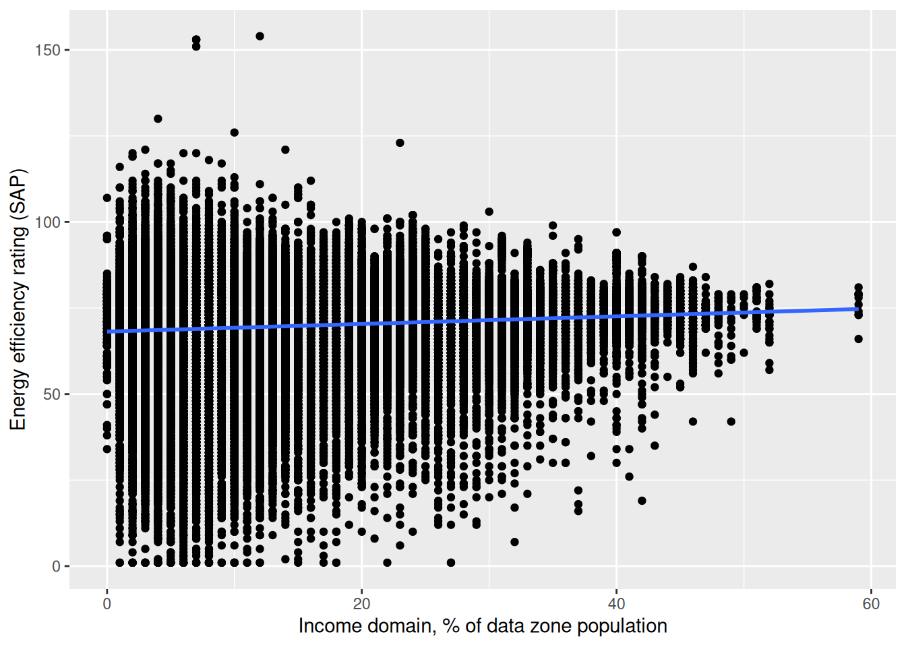

dir.create("data", showWarnings = FALSE)Say we were interested in whether there is a relationship between an area’s deprivation level and the energy efficiency of housing. We could model that and control for variables such as age of building, whether house/flat, and tenure type (e.g. homeownership, private rent, social rent).
The Scottish Government publishes Energy Performance Certificates data as a large 188mb 7z file. Manually download it and extract Q1_2026.csv, Q2_2026.csv, and Q3_2026.csv files into the data subfolder of your R project. Each csv file contains all energy certifications issued in a given quarter. These are issued when a dwelling is built, sold, let to a new tenant, and under various grant schemes and other potential reasons. We will be using the “SAP rating” which is calculated based on energy efficiency of the building and energy costs.
You might be more used to seeing SAP ratings via the bands:
| Band | Rating |
|---|---|
| A | 92 or more |
| B | 81 to 91 |
| C | 69 to 80 |
| D | 55 to 68 |
| E | 39 to 54 |
| F | 21 to 38 |
| G | 1 to 20 |
See SAP specification, Table 14 “Rating bands” (page 231).
(Note, in practice which data to use would depend on your research questions. To keep things relatively simple to cover linking datasets, we will just assume we are interested in ‘2026 to date’.)
Importantly, we can link this Scottish Government EPC data with the SIMD data used on Data Project 1.
If using same R project folder as used for DP1 then reuse the SIMD Excel file - with the name you saved it as.
If working in a new R project:
- Create a data directory:
- Grab a copy of the SIMD data:
download.file("https://www.gov.scot/binaries/content/documents/govscot/publications/statistics/2020/01/scottish-index-of-multiple-deprivation-2020-indicator-data/documents/simd_2020_indicators/simd_2020_indicators/govscot%3Adocument/SIMD%2B2020v2%2B-%2Bindicators.xlsx",
"data/simd2020_indicators.xlsx", mode = "wb")Next we install the packages we needed - only installing those not previously installed:
install.packages(c("tidyverse", "janitor", "vtable", "modelsummary"))Then we laod the packages we need:
Followed by reading in our datasets:
simd <- read_excel("data/simd2020_indicators.xlsx", sheet = "Data", na = "*") |> clean_names()
epc_raw <- read_csv(c("data/Q1 2026.csv", "data/Q2 2026.csv", "data/Q3 2026.csv"),
skip = 1, id = "file") |> clean_names()If reusing the file from DP1, ensure to edit the first line to match name you saved the SIMD under.
As can see, as the EPC data is consistent across files we can simply read the files of interest together. If there were any changes in the columns used across the csv files we would instead need to load them by which are consistent and then do further steps to link them. We skip = 1 as if you look at the files you will see they have two header rows. There are different ways to handle that, but this is easy option that suits our purposes. The id = "file" adds a column with info for which file each row comes from, which is not always needed, but useful to have in many circumstances. We also use _raw as at this stage we just have the ‘raw’ csv read in.
clean_names() is from the janitor package we used in previous week. It has a function to covert all variable names like Data Zone 2011 to data_zone_2011. Though we still end up with some overly long column names we will want to rename.
Next we can select - and rename- the variables of interest from the EPC data:
epc <- epc_raw |>
select(rating = current_energy_efficiency_rating,
tenure,
type = property_type,
age = part_1_construction_age_band,
reason = transaction_type,
data_zone = data_zone_2011)Now we can see what the reasons were for a new certificate:
epc |> count(reason)# A tibble: 10 × 2
reason n
<chr> <int>
1 ECO assessment 3591
2 FiT application 7
3 RHI application 324
4 assessment for green deal 44
5 marketed sale 81430
6 new dwelling 11849
7 non marketed sale 747
8 none of the above 24835
9 rental 29096
10 <NA> 1169(Note, we could also write the above as count(epc, reason) without pipes.)
If we look at tenure we will also see a lot of unknowns:
table(epc$tenure)
owner-occupied rented (private) rented (social) unknown
100226 12861 31639 8366 There can be various reasons for that, which would be worth investing further, but again to keep things relatively simple we will simply treat these as NA, which will also result in these rows being dropped from our regression models.
Next if we look at our data zones, we will see we cannot do a simple match as the EPC data includes more than just the direct code:
head(epc$data_zone)[1] "S01008040 (East Clober and Mains Estate - 04)"
[2] "S01006928 (Blackburn - 04)"
[3] "S01007080 (Peterhead Bay - 03)"
[4] "S01010614 (Inverness Hilton - 04)"
[5] "S01007940 (Darvel - 01)"
[6] "S01012348 (St Boswells - West)" And SIMD:
head(simd$data_zone)[1] "S01006506" "S01006507" "S01006508" "S01006509" "S01006510" "S01006511"Fortunately though the 9 character code we want appears at the start of the EPC data, so we can simply edit the colum to only keep those first 9 characters:
Now we can create a new dwelling data frame based on EPC which links to the SIMD by their data_zone column:
# A tibble: 6,970 × 2
data_zone n
<chr> <int>
1 <NA> 11144
2 S01006738 297
3 S01010022 167
4 S01012130 154
5 S01009508 147
6 S01010425 142
7 S01009829 130
8 S01008928 127
9 S01007465 123
10 S01012072 121
# ℹ 6,960 more rowsThere is one (small) issue though with our data. We can see it if check for rows without a data zone:
# A tibble: 2 × 2
`is.na(data_zone)` n
<lgl> <int>
1 FALSE 141948
2 TRUE 11144Looking at reasons for a new rating, it is unclear why some do not have a data zone, but most are new dwellings:
# A tibble: 18 × 3
`is.na(income_rate)` reason n
<lgl> <chr> <int>
1 FALSE ECO assessment 3590
2 FALSE FiT application 7
3 FALSE RHI application 324
4 FALSE assessment for green deal 43
5 FALSE marketed sale 79932
6 FALSE new dwelling 2295
7 FALSE non marketed sale 744
8 FALSE none of the above 24767
9 FALSE rental 29065
10 FALSE <NA> 1166
11 TRUE ECO assessment 1
12 TRUE assessment for green deal 1
13 TRUE marketed sale 1498
14 TRUE new dwelling 9554
15 TRUE non marketed sale 3
16 TRUE none of the above 68
17 TRUE rental 31
18 TRUE <NA> 3I could not find better info skimming the documentation, where there might be clearer info on why - but in some cases you will run into situations where the full reasons behind missing data is unclear.
The income domain is % of people in a data zone receiving certain benefits - see SIMD technical notes PDF. Rather than direct % it is stored in format of 0.10 for 10%. So to make things more directly readable we can then * 100.
dwellings <- dwellings |> mutate(income_domain = income_rate * 100)Next let’s look at some descriptive stats for our data:
| Variable | N | Mean | Std. Dev. | Min | Pctl. 25 | Pctl. 75 | Max |
|---|---|---|---|---|---|---|---|
| Energy efficiency rating (SAP) | 153092 | 71 | 12 | 1 | 66 | 78 | 154 |
| Income deprivation, & of data zone | 141933 | 13 | 9.4 | 0 | 5 | 18 | 59 |
| Tenure | 144726 | ||||||
| ... owner-occupied | 100226 | 69% | |||||
| ... rented (private) | 12861 | 9% | |||||
| ... rented (social) | 31639 | 22% | |||||
| Property type | 153092 | ||||||
| ... Bungalow | 16381 | 11% | |||||
| ... Flat | 61521 | 40% | |||||
| ... House | 72236 | 47% | |||||
| ... Maisonette | 2787 | 2% | |||||
| ... Park home | 167 | 0% |
And % meeting the income domain’s measure of deprivation and energy rating by dwelling tenure:
# A tibble: 4 × 3
tenure income_domain rating
<chr> <dbl> <dbl>
1 owner-occupied 10.6 69.3
2 rented (private) 11.8 68.2
3 rented (social) 19.6 73.4
4 <NA> 11.2 83.8Next we can look at scatterplot of our two main variables of interest, the income domain measure of deprivation and energy rating:
ggplot(dwellings, aes(x = income_domain, y = rating)) +
geom_point() +
geom_smooth(method = "lm") +
labs(x = "Income domain, % of data zone population",
y = "Energy efficiency rating (SAP)")
(Note: So not necessarily the best data for multiple regression which want to cover this week too, so I’ll quickly go through rest of code to show the regression results so have time to work on page with better examples.)
model_dwellings <- dwellings |>
drop_na(income_domain, tenure, age) |>
mutate(age = fct_relevel(age, "before 1919"))(We are dropping so our two models use same sample.)
Call:
lm(formula = rating ~ income_domain + tenure + type + age, data = model_dwellings)
Residuals:
Min 1Q Median 3Q Max
-68.495 -3.342 1.467 5.326 72.545
Coefficients:
Estimate Std. Error t value Pr(>|t|)
(Intercept) 57.288558 0.101571 564.024 <2e-16 ***
income_domain 0.057854 0.003318 17.439 <2e-16 ***
tenurerented (private) -0.065168 0.096436 -0.676 0.499
tenurerented (social) 4.046894 0.073062 55.390 <2e-16 ***
typeFlat 6.602668 0.094173 70.112 <2e-16 ***
typeHouse 2.799765 0.091162 30.712 <2e-16 ***
typeMaisonette 4.870004 0.213403 22.821 <2e-16 ***
typePark home -15.362765 0.765681 -20.064 <2e-16 ***
age1919-1929 2.048744 0.178164 11.499 <2e-16 ***
age1930-1949 3.797271 0.106954 35.504 <2e-16 ***
age1950-1964 5.045627 0.091356 55.230 <2e-16 ***
age1965-1975 5.355349 0.093504 57.274 <2e-16 ***
age1976-1983 7.037539 0.132400 53.153 <2e-16 ***
age1984-1991 7.846789 0.122572 64.018 <2e-16 ***
age1992-1998 10.205634 0.127546 80.015 <2e-16 ***
age1999-2002 12.214035 0.156641 77.975 <2e-16 ***
age2003-2007 14.634286 0.130178 112.418 <2e-16 ***
age2008 onwards 15.914839 0.176194 90.326 <2e-16 ***
---
Signif. codes: 0 '***' 0.001 '**' 0.01 '*' 0.05 '.' 0.1 ' ' 1
Residual standard error: 9.766 on 129075 degrees of freedom
Multiple R-squared: 0.2258, Adjusted R-squared: 0.2257
F-statistic: 2214 on 17 and 129075 DF, p-value: < 2.2e-16modelsummary(list("Simple" = model_simp, "Multiple" = model_mult), gof_map = c("nobs", "r.squared", "adj.r.squared"))| Simple | Multiple | |
|---|---|---|
| (Intercept) | 66.385 | 57.289 |
| (0.052) | (0.102) | |
| income_domain | 0.163 | 0.058 |
| (0.003) | (0.003) | |
| tenurerented (private) | -0.065 | |
| (0.096) | ||
| tenurerented (social) | 4.047 | |
| (0.073) | ||
| typeFlat | 6.603 | |
| (0.094) | ||
| typeHouse | 2.800 | |
| (0.091) | ||
| typeMaisonette | 4.870 | |
| (0.213) | ||
| typePark home | -15.363 | |
| (0.766) | ||
| age1919-1929 | 2.049 | |
| (0.178) | ||
| age1930-1949 | 3.797 | |
| (0.107) | ||
| age1950-1964 | 5.046 | |
| (0.091) | ||
| age1965-1975 | 5.355 | |
| (0.094) | ||
| age1976-1983 | 7.038 | |
| (0.132) | ||
| age1984-1991 | 7.847 | |
| (0.123) | ||
| age1992-1998 | 10.206 | |
| (0.128) | ||
| age1999-2002 | 12.214 | |
| (0.157) | ||
| age2003-2007 | 14.634 | |
| (0.130) | ||
| age2008 onwards | 15.915 | |
| (0.176) | ||
| Num.Obs. | 129093 | 129093 |
| R2 | 0.019 | 0.226 |
| R2 Adj. | 0.019 | 0.226 |
(Note, the above is merely to compare the simple with multiple linear regression model)